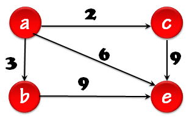

📌 Introducción a los Grafos
Un grafo es una estructura de datos ampliamente utilizada en informática, matemáticas y ciencias aplicadas para representar relaciones o conexiones entre elementos. Los grafos permiten modelar problemas en los que intervienen elementos (nodos) que están interconectados de alguna manera (aristas). Son una de las estructuras más flexibles y potentes que existen. Está compuesto por:
- Nodos o Vértices (V): Representan entidades.
- Aristas o Ejes (E): Representan conexiones o relaciones entre nodos.
Tipos de Grafos
- No dirigido: Un grafo no dirigido es un grafo donde las conexiones entre nodos no tienen dirección. Si dos nodos están conectados, la relación es bidireccional: se puede ir de uno al otro en ambos sentidos. Se usa para representar relaciones mutuas, como amistades o caminos de doble vía.
- Dirigido: Un grafo dirigido es un grafo en el que las conexiones entre nodos sí tienen dirección. Cada arista indica un sentido específico (A → B), por lo que no siempre se puede volver de B a A. Se usa para representar relaciones unidireccionales, como flujos, jerarquías o enlaces web.
- Ponderado: Un grafo ponderado es un grafo en el que cada arista tiene un valor o peso asociado. Ese peso puede representar distancia, costo, tiempo u otra magnitud relevante. Los grafos ponderados pueden ser dirigidos o no dirigidos y se usan para modelar rutas, costos y optimización. 